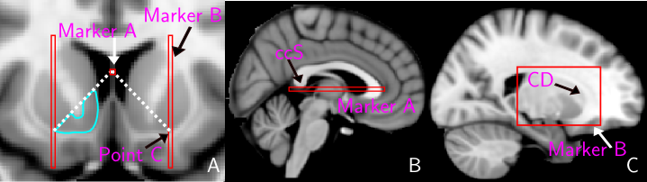

Oxford-GSK-Imanova Structural–anatomical Striatal Atlas
An anatomical atlas with the 3 striatal structural sub-regions: caudate (CD), putamen (PU) and ventral striatum (VST). The striatum was segmented on the MNI152 template according to the guidelines described below (Tziortzi et al. 2011).
VST: Several studies have shown that there is not a definitive anatomical, histological or histochemical distinction between Nucleus Accumbens (NAC), CD and PU. Therefore the dorsal boundary of VST was defined so as to include NAC, medial CD, rostral-ventral PU and also to be consistent with the functional anatomy of VST as defined in connectivity studies. The dorsal boundary is defined by connecting two points (Marker A and Point C) on the coronal plane (Figure 1A). These two points are predefined by the placement of two 3D markers (Markers A & B) on the sagittal plane (Figure 1B-C). Marker A: a horizontal line intersecting the most ventral part of the splenium of the corpus callosum (ccS) is placed on the most mid-sagittal slice. Sometimes there are two or three slices which can be described as the “most mid-sagittal slice” and in this case the operator is advised to select the one where thalamus is the smallest. In coronal view Marker A appears as a single voxel in each slice (Figure 1A, Marker A) and this voxel will be used for the definition of the dorsal boundary of VST. Marker B: Moving from lateral to medial on each hemisphere, a rectangle is placed on the first slice where the grey matter of the head of CD can be clearly seen. In a coronal view this will appear as a voxel width column (Figure 1A, Marker B). The inferior intersection of this column with grey matter of PU, within this column, is defined as the point C (Figure 1A). VST tracing begins when point C comes into view, up to the slice where anterior commissure connects the two hemispheres. However, there are occasions that the thin white matter layer which separates the VST area from subcallosal gyrus and/or septal nuclei can not be observed, making it infeasible to sample the VST up to the anterior commissure. Any white matter (e.g. internal capsule) should be excluded from the ROI.
CD: Caudate is drawn wherever visible on the coronal plane. The inferior border of caudate is defined by the ventral striatum and care should be taken not to include cerebrospinal fluid from the ventricles.
PU: Putamen is defined on the transverse plane and it is traced on all slices where dense grey matter can be clearly observed and differentiated from surrounding structures. On the most ventral slices where the anterior commissure (AC) divides PU into two regions the ROI includes only the grey matter that is anterior to AC.

Figure 1
Detailed information about the structural subdivision can be found in:
Tziortzi et al. Imaging dopamine receptors in humans with [11C]-(+)-PHNO: dissection of D3 signal and anatomy. NeuroImage 54: 264-77 (2011)